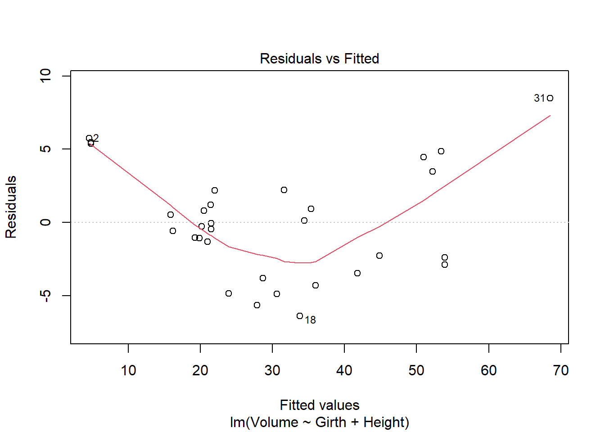
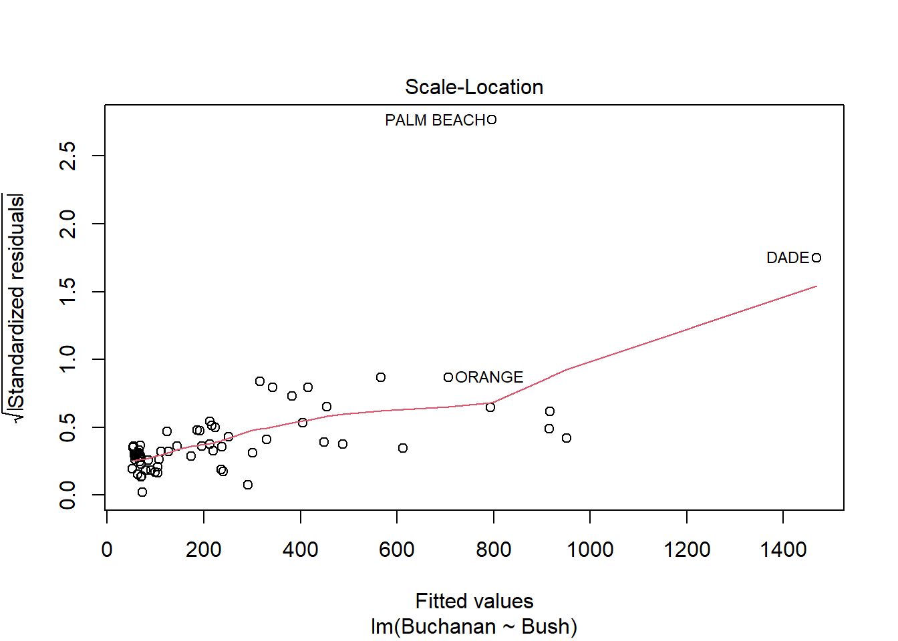
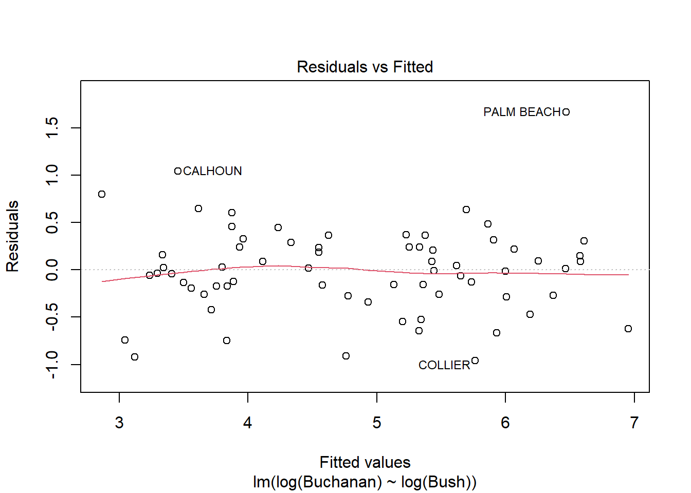
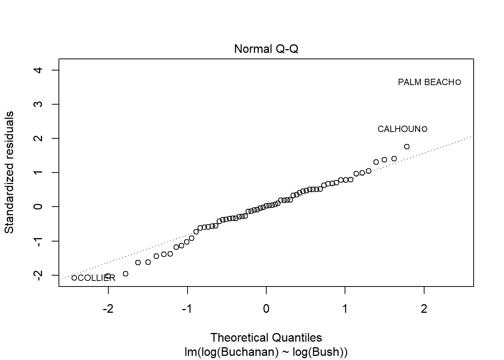

Loading required package: car
Loading required package: carData
Attaching package: 'car'
The following object is masked from 'package:dplyr':
recode
The following object is masked from 'package:purrr':
some
Loading required package: effects
lattice theme set by effectsTheme()
See ?effectsTheme for details.
Code
library(smss)
Warning: package 'smss' was built under R version 4.2.2
Code
library(dplyr)library(ggplot2)library(GGally)
Warning: package 'GGally' was built under R version 4.2.2
Registered S3 method overwritten by 'GGally':
method from
+.gg ggplot2
Code
library(qpcR)
Error in library(qpcR): there is no package called 'qpcR'
P S Be Ba
Min. : 17.50 Min. :0.40 Min. :1.000 Min. :1.000
1st Qu.: 72.90 1st Qu.:1.33 1st Qu.:3.000 1st Qu.:2.000
Median : 96.00 Median :1.57 Median :3.000 Median :2.000
Mean : 99.53 Mean :1.65 Mean :3.183 Mean :1.957
3rd Qu.:115.00 3rd Qu.:1.98 3rd Qu.:4.000 3rd Qu.:2.000
Max. :309.40 Max. :3.85 Max. :5.000 Max. :3.000
New
Min. :0.0000
1st Qu.:0.0000
Median :0.0000
Mean :0.3011
3rd Qu.:1.0000
Max. :1.0000
Code
data <- house.selling.price.2cor(data)
P S Be Ba New
P 1.0000000 0.8988136 0.5902675 0.7136960 0.3565540
S 0.8988136 1.0000000 0.6691137 0.6624828 0.1762879
Be 0.5902675 0.6691137 1.0000000 0.3337966 0.2672091
Ba 0.7136960 0.6624828 0.3337966 1.0000000 0.1820651
New 0.3565540 0.1762879 0.2672091 0.1820651 1.0000000
Code
model1 <-lm(P ~ S + Ba + New + Be ,data = data)backElim <-lm(P ~ S + Ba + New ,data = data)forSel <-lm(P ~ S + New + Ba + Be,data = data)summary(model1)
Call:
lm(formula = P ~ S + Ba + New + Be, data = data)
Residuals:
Min 1Q Median 3Q Max
-36.212 -9.546 1.277 9.406 71.953
Coefficients:
Estimate Std. Error t value Pr(>|t|)
(Intercept) -41.795 12.104 -3.453 0.000855 ***
S 64.761 5.630 11.504 < 2e-16 ***
Ba 19.203 5.650 3.399 0.001019 **
New 18.984 3.873 4.902 4.3e-06 ***
Be -2.766 3.960 -0.698 0.486763
---
Signif. codes: 0 '***' 0.001 '**' 0.01 '*' 0.05 '.' 0.1 ' ' 1
Residual standard error: 16.36 on 88 degrees of freedom
Multiple R-squared: 0.8689, Adjusted R-squared: 0.8629
F-statistic: 145.8 on 4 and 88 DF, p-value: < 2.2e-16
Code
summary(backElim)
Call:
lm(formula = P ~ S + Ba + New, data = data)
Residuals:
Min 1Q Median 3Q Max
-34.804 -9.496 0.917 7.931 73.338
Coefficients:
Estimate Std. Error t value Pr(>|t|)
(Intercept) -47.992 8.209 -5.847 8.15e-08 ***
S 62.263 4.335 14.363 < 2e-16 ***
Ba 20.072 5.495 3.653 0.000438 ***
New 18.371 3.761 4.885 4.54e-06 ***
---
Signif. codes: 0 '***' 0.001 '**' 0.01 '*' 0.05 '.' 0.1 ' ' 1
Residual standard error: 16.31 on 89 degrees of freedom
Multiple R-squared: 0.8681, Adjusted R-squared: 0.8637
F-statistic: 195.3 on 3 and 89 DF, p-value: < 2.2e-16
Code
AIC(model1)
[1] 790.6225
Code
AIC(backElim)
[1] 789.1366
Code
BIC(model1)
[1] 805.8181
Code
BIC(backElim)
[1] 801.7996
Code
PRESS(model1)
Error in PRESS(model1): could not find function "PRESS"
Code
PRESS(backElim)
Error in PRESS(backElim): could not find function "PRESS"
#Question 1A The Beds variable should be deleted first for backward elimination because it has the highest p-value
#Question 1B The Size variable should be added first for forward selection, because it has the most explanatory value.
#Question 1C Beds likely has such a large p-value because its variance that it explains is almost completely absorbed by size, which it is most highly correlated with.
#Question 1D For R squared, I also prefer the backwards elimination method model, because it reduces the residuals.
For adjusted R squared, I prefer the backwards elimination method model without the Bed predictor, because it reduces the residuals.
For AIC I would also prefer the backwards elimination model created, because it reduces the AIC score, same with the BIC score.
The PRESS metric is the only one where the value is lower for the model with all of the variables, so I would choose that for PRESS.
Call:
lm(formula = Volume ~ Girth + Height, data = data2)
Residuals:
Min 1Q Median 3Q Max
-6.4065 -2.6493 -0.2876 2.2003 8.4847
Coefficients:
Estimate Std. Error t value Pr(>|t|)
(Intercept) -57.9877 8.6382 -6.713 2.75e-07 ***
Girth 4.7082 0.2643 17.816 < 2e-16 ***
Height 0.3393 0.1302 2.607 0.0145 *
---
Signif. codes: 0 '***' 0.001 '**' 0.01 '*' 0.05 '.' 0.1 ' ' 1
Residual standard error: 3.882 on 28 degrees of freedom
Multiple R-squared: 0.948, Adjusted R-squared: 0.9442
F-statistic: 255 on 2 and 28 DF, p-value: < 2.2e-16
Code
plot(model2)

Question 2A
Ran model in code above.
Question 2B
It seems like some of the regression assumptions may be violated. There is something of a parabolic relationship in this model, which was left out of the residuals. THe QQ looks normal, but the spread-location plot also shows that the residuals aren’t necessarily spread evenly along the range of values. The residuals vs leverage looks reasonable. It seems that there is not homoscedasticity of errors, which could be an issue for regression.
Question 3
Code
data(florida)data3 <- floridamodel3 <-lm(Buchanan~Bush, data = florida)summary(model3)
Call:
lm(formula = Buchanan ~ Bush, data = florida)
Residuals:
Min 1Q Median 3Q Max
-907.50 -46.10 -29.19 12.26 2610.19
Coefficients:
Estimate Std. Error t value Pr(>|t|)
(Intercept) 4.529e+01 5.448e+01 0.831 0.409
Bush 4.917e-03 7.644e-04 6.432 1.73e-08 ***
---
Signif. codes: 0 '***' 0.001 '**' 0.01 '*' 0.05 '.' 0.1 ' ' 1
Residual standard error: 353.9 on 65 degrees of freedom
Multiple R-squared: 0.3889, Adjusted R-squared: 0.3795
F-statistic: 41.37 on 1 and 65 DF, p-value: 1.727e-08
Code
plot(model3)

Code
model4 <-lm(log(Buchanan)~log(Bush), data = florida)summary(model4)
Call:
lm(formula = log(Buchanan) ~ log(Bush), data = florida)
Residuals:
Min 1Q Median 3Q Max
-0.96075 -0.25949 0.01282 0.23826 1.66564
Coefficients:
Estimate Std. Error t value Pr(>|t|)
(Intercept) -2.57712 0.38919 -6.622 8.04e-09 ***
log(Bush) 0.75772 0.03936 19.251 < 2e-16 ***
---
Signif. codes: 0 '***' 0.001 '**' 0.01 '*' 0.05 '.' 0.1 ' ' 1
Residual standard error: 0.4673 on 65 degrees of freedom
Multiple R-squared: 0.8508, Adjusted R-squared: 0.8485
F-statistic: 370.6 on 1 and 65 DF, p-value: < 2.2e-16
Code
plot(model4)


Question 3A
Palm beach county is an outlier based on the diagnostic plots, given all of the plots, as it’s value is by far the furthest from the fitted line.
Question 3B
The findings change somewhat, but not that much. Palm Beach is still an outlier.
Source Code
---title: "Homework 5"author: "Donny Snyder"desription: "Homework 5 Submission"date: "12/8/2022"format: html: toc: true code-fold: true code-copy: true code-tools: truecategories: - hw5 - regression---```{r}library(tidyverse)library(alr4)library(smss)library(dplyr)library(ggplot2)library(GGally)library(qpcR)```# Question 1```{r, echo=T}data(house.selling.price.2)summary(house.selling.price.2)data <- house.selling.price.2cor(data)model1 <-lm(P ~ S + Ba + New + Be ,data = data)backElim <-lm(P ~ S + Ba + New ,data = data)forSel <-lm(P ~ S + New + Ba + Be,data = data)summary(model1)summary(backElim)AIC(model1)AIC(backElim)BIC(model1)BIC(backElim)PRESS(model1)PRESS(backElim)```#Question 1AThe Beds variable should be deleted first for backward elimination because it has the highest p-value#Question 1BThe Size variable should be added first for forward selection, because it has the most explanatory value.#Question 1CBeds likely has such a large p-value because its variance that it explains is almost completely absorbed by size, which it is most highly correlated with.#Question 1DFor R squared, I also prefer the backwards elimination method model, because it reduces the residuals.For adjusted R squared, I prefer the backwards elimination method model without the Bed predictor, because it reduces the residuals.For AIC I would also prefer the backwards elimination model created, because it reduces the AIC score, same with the BIC score.The PRESS metric is the only one where the value is lower for the model with all of the variables, so I would choose that for PRESS.#Question 2```{r, echo=T}data2 <- treesmodel2 <-lm(Volume ~ Girth + Height, data = data2)summary(model2)plot(model2)```# Question 2ARan model in code above.# Question 2BIt seems like some of the regression assumptions may be violated. There is something of a parabolic relationship in this model, which was left out of the residuals. THe QQ looks normal, but the spread-location plot also shows that the residuals aren't necessarily spread evenly along the range of values. The residuals vs leverage looks reasonable. It seems that there is not homoscedasticity of errors, which could be an issue for regression.# Question 3```{r, echo=T}data(florida)data3 <- floridamodel3 <-lm(Buchanan~Bush, data = florida)summary(model3)plot(model3)model4 <-lm(log(Buchanan)~log(Bush), data = florida)summary(model4)plot(model4)```# Question 3APalm beach county is an outlier based on the diagnostic plots, given all of the plots, as it's value is by far the furthest from the fitted line.# Question 3BThe findings change somewhat, but not that much. Palm Beach is still an outlier.